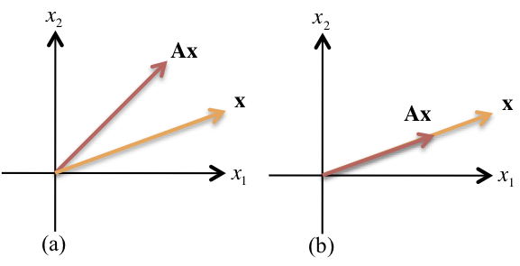

7.5. Transformation of States and System Diagonalization¶
The canonical forms described in the last section give different descriptions of the same transfer function (TF) and are therefore equivalent in their overall input-output relationship. This means that it should be possible to convert one canonical form into another by the operation of simple matrix operations. Furthermore, by transforming a system to the normal form, determining the response and mapping back, it is possible to determine the total system response of any state space system.
The eigenvalues of the state matrix \(\mathbf{A}\) have an important influence on the system response and understanding them is key to understanding the general solution of state-space systems.
In this section we define eigenvalues and eigenvectors, show the system transformation method and prove that it has no impact on the system eigenvalues, show how it can be used to transform an arbitrary state-space model into one with a diagonal (normal) structure, and finally we use these results to find a general time-response solution to the state space equations.
7.5.1. Pre-Class Presentation: Transformation of State Models¶
For a given transfer function the canonical forms are equivalent in their input-output relationships.
We can convert one form of canonical system into another by the application of simple matrix operations.
Transforming to normal form simplifies the calculation of system response.
The eigenvalues of the \(\mathbf{A}\) matrix are key to the process.
Knowledge of a system’s eigenvalues means that we can determine the system response of any LTI system.
7.5.2. Section Contents¶
Eigenvalues and eigenvectors
System transformation
Diagonalization of a state space model
Solution to the general state equations
7.5.3. Eigenvalues and Eigenvectors¶
7.5.3.1. Definition of an Eigenvector¶
The eignevectors1 of the matrix \(\mathbf{A}\) are all vectors \(\mathbf{x}_i\ne\mathbf{0}\), which under the transformation \(\mathbf{A}\) become multiples of themselves;
That is,
where each \(\lambda_i\) is a constant called an eigenvalue.
Figure 1 illustrates this definition of eigenvectors. If \(\mathbf{Ax}\) is not collinear with \(\mathbf{x}\) after the transformation, \(\mathbf{x}\) is not an eigenvector. If \(\mathbf{Ax}\) is collinear with \(\mathbf{x}\) after the transformation, \(\mathbf{x}\) is an eigenvector.
7.5.3.2. Figure 1: Eigenvectors and Transformations¶

To be an eigenvector, the transformation \(\mathbf{Ax}\) must be collinear with \(\mathbf{x}\). Thus, in (a), \(\mathbf{x}\) is not an eigenvector: in (b), it is.
7.5.3.3. Eigenvalues¶
The eigenvalues of the matrix \(\mathbf{A}\) are the values of \(\lambda_i\) that satisfy (1) for \(\mathbf{x}_i\ne \mathbf{0}\).
To find the eigenvectors, we arrange equation (1). The eigenvectors, \(\mathbf{x}_i\), satisfy
Solving for \(\mathbf{x}_i\)
by premultiplying both sides by \((\lambda_i\mathbf{I}-\mathbf{A})^{-1}\) yields
Since \(\mathbf{x}_i\ne \mathbf{0}\),
a nonzero solution exists if
From which \(\lambda_i\), the eigenvalues, can be found.
We are now ready to show how to find the eigenvectors \(\mathbf{x}_i\). First we find the eigenvalues, \(\lambda_i\), using \(\det(\lambda_i\mathbf{I}-\mathbf{A}) = \mathbf{0}\), and then we use equation (1) to find the eigenvectors.
7.5.3.4. Finding the eigenvectors of a system¶
To find the eigenvectors \(\mathbf{x}_i\) of a system matrix \(\mathbf{A}\)
First find the eigenvalues, \(\lambda_i\), using \(\det(\lambda_i\mathbf{I}-\mathbf{A}) = \mathbf{0}\)
Use \(\mathbf{A}\mathbf{x}_i=\lambda_i\mathbf{x}_i\) to find the eigenvectors.
We will work through an example in class.
7.5.4. Transformation of State Space Models¶
Suppose we have a state space model with states \(\mathbf{x}\) and matrices \(\mathbf{A}\), \(\mathbf{B}\), \(\mathbf{C}\) and \(\mathbf{D}\) and we wish to transform to a model with states \(\mathbf{w}\) where \(\mathbf{x}=\mathbf{Tw}\). \(\mathbf{T}\) is the transformation matrix for the states.
7.5.4.1. State transformation¶
7.5.4.2. Ouput transformation¶
Similarly for the output equation:
7.5.4.3. Transformed Model¶
Therefore the new state space model is:
where \(\mathbf{A}'=\mathbf{T}^{-1}\mathbf{A}\mathbf{T}\), \(\mathbf{B}'=\mathbf{T}^{-1}\mathbf{B}\), \(\mathbf{C}'=\mathbf{CT}\), and \(\mathbf{D}'=\mathbf{D}\).
This should not be surprising since the poles of the system being modelled correspond to the eigenvalues of the state matrix, whatever the choice of states.
7.5.4.4. Similarity Transform Preserves Eigenvalues¶
The transformation \(\mathbf{T}^{-1}\mathbf{AT}\) is a similarity transform. That is the eigenvalues are the same as for \(\mathbf{A}\).
Proof
Let \(\mathbf{x}=\mathbf{Tw}\) then
Therefore if \(\lambda\) is an eigenvalue of \(\mathbf{A}\) then it is also one of \(\mathbf{A}'=\mathbf{T}^{-1}\mathbf{AT}\).
QED.
7.5.5. Diagonalization of a System Matrix¶
If we choose the eigenvectors of a system matrix \(\mathbf{A}\) to be the basis of a transformation, \(\mathbf{T}\), the resulting system matrix will be in the diagonal normal form. Let the transformation matrix \(\mathbf{T}\) consist of the eigenvectors of \(\mathbf{A}\), \(\mathbf{x}_i\).
Since \(\mathbf{x}_i\) are eigenvectors,
\(\mathbf{A}\mathbf{x}_i=\lambda_i\mathbf{x}_i\), can be written equivalently as a set of equations expressed by
where \(\mathbf{\Lambda}\) is a matrix which has the eigenvalues \(\lambda_i\) on the diagonal in some order and zeros elsewhere, and \(\mathbf{T}\) is as defined in Eq. (8).
Solving Eq. (9) for \(\mathbf{\Lambda}\) by premultiplying by \(\mathbf{T}^{-1}\), we get
which is the system matrix in normal canonical form.2
In summary, under the transformation \(\mathbf{T}\), consisting of the eigenvalues of the system matrix, the transformed system is identical to that obtained using the partial fraction expansion of the transfer function with distinct real roots.
7.5.6. Using Diagonalization to Solve State Equations¶
It is possible to obtain solutions for the state equations in any set of states, \(\mathbf{x}\), by transforming to normal canonical form and solving the latter’s states, \(\mathbf{w}\), as shown in Section 7.4.
The initial states are found, using the inverse transformation, as:
The solutions to the original states can then be found from \(\mathbf{w}\) using the transformation $\(\mathbf{x}=\mathbf{Tw}\)$
Since the state space model for \(\mathbf{w}\) is in normal form then the state matrix, \(\mathbf{A}' = \mathbf{\Lambda}\), is diagonal with the eigenvalues of \(\mathbf{A}\) in some order on the diagonal.
As demonstrated above, the columns of the transformation matrix, \(\mathbf{T}\) will be formed by concatenation of the corresponding eigenvectors of \(\mathbf{A}\) in the same order.
7.5.6.1. Solution of General State Equations¶
In Section 7.4 we showed how we could determine the solution to a state equation in normal (diagonal form).
Here we have demonstrated how to use the eignenvalues and eigenvectors to transform a model in state space form to the normal form.
Thus if we have \(\mathbf{w}\) the initial states will be \(\mathbf{w}_0=\mathbf{T}^{-1}\mathbf{x}_0\), and
The solutions to the original states can then be found from \(\mathbf{w}\) using the transformation \(\mathbf{x}=\mathbf{Tw}\)
Example 4 illustrates the procedure.
7.5.7. Summary of Pre-Class Presentation¶
Eigenvalues and eigenvectors
System transformation
Diagonalization of a state space model
Solution to the general state equations
7.5.8. Activities for Class¶
Worked Examples (solutions in notes)
System Transformations in Matlab
7.5.9. Worked Examples¶
7.5.9.1. Example 1: finding eigenvectors¶
Find the eigenvectors of the matrix
7.5.9.1.1. Solution¶
The eigenvectors, \(\mathbf{x}_i\), satisfy Eq. (2). First, use \(\det(\lambda_i\mathbf{I}-\mathbf{A})=0\) to find the eigenvalues, \(\lambda_i\), for Eq. (1):
from which the eigenvalues are \(\lambda_1 = -2\) and \(\lambda_2 = -4\).
Using Eq. (1) successively with each eigenvalue, we have
or
from which \(x_1 = x_2\). Thus,
Using the other eigenvalue, \(-4\), we have
Using Eqs. (5) and (6), one choice of eigenvectors is
7.5.9.2. Example 2: Similarity transformations on state equations¶
Given the system represented in state space by the following equations
transform the system to a new set of state variables, \(\mathbf{w}\), where the new state variables are related to the original state variables, \(\mathbf{x}\), as follows:
7.5.9.2.1. Solution¶
Expressing the transformed states in vector-matrix form,
Thus
Therefore the transformed system is
7.5.9.3. Example 3: Diagonalization of a system in state space¶
Given the system shown below, find the diagonal (normal form) system that is similar.
7.5.9.3.1. Solution¶
First find the eigenvalues and the eigenvectors. This step was performed in Example 1. Next form the transformation matrix \(\mathbf{T}\), whose columns are the eignevectors.
finally form the similar systems’s system matrix, input matrix and output matrix respectively.
Substituting this result into the equivalent state equations gives
Notice that the transformed system matrix is diagonal, with the eigenvalues on the diagonal.
7.5.9.4. Example 4¶
Solve the state equations $\({\bf{\dot x}} = \left[ {\begin{array}{*{20}c} { - 3} & { - 2} \\ 1 & 0 \\ \end{array}} \right]{\bf{x}} + \left[ {\begin{array}{*{20}c} 1 \\ 0 \\ \end{array}} \right]u\)\( given \)\mathbf{x}_0 = [1, 0]^T\( at \)t=0\( and \)u=0$.
7.5.9.4.1. Solution¶
First find the eigenvalues: The eigenvalues of the state matrix are the roots of:
Thus \(\lambda_1=-1\) and \(\lambda_2=-2\).
Next, find the transformation matrix: The eigenvectors are the solutions of \(\mathbf{A}\mathbf{x}_i=\lambda_i\mathbf{x}_i\) for \(i=1,2\).
For \(i=1\)
These equations are linearly dependent, and if we let \(x_1 =1\) then \(x_2 = -1\) giving \(\mathbf{x}_1=[1,\ -1]^T\).
Similarly, for \(i=2\) we obtain \(\mathbf{x}_2=[1, -0.5]^T\).
Then
Finally solve the state equations of the transformed system
Transform the initial states:
Solve for the transformed states:
and
Transform the answers back to the original states:
Therefore $\(\begin{eqnarray*} x_1 & = & -e^{-t} + 2e^{-2t} \\ x_2 & = & e^{-t}-e^{-2t} \\\end{eqnarray*}\)$
7.5.10. System Transformations in MATLAB¶
MATLAB provides a rich set of tools for finding eigenvalues and eigenvectors, transforming state equations using similarity transforms and solving state space equations. We conclude this lecture by reworking the first three examples in Matlab. You should repeat these examples during the self-directed learning session.
clear all
format compact
imatlab_export_fig('print-svg') % Static svg figures.
7.5.10.1. Eigenvalues and eigenvectors¶
Solution of Example 1
A = [-3 1; 1 -3]
[T, Lambda] = eig(A)
A =
-3 1
1 -3
T =
0.7071 0.7071
-0.7071 0.7071
Lambda =
-4 0
0 -2
Note \(\mathbf{T}\) is the transform matrix whose columns are the eigenvectors, \(\mathbf{\Lambda}\) is the diagonal matrix of eigenvalues.
7.5.10.2. Similarity transforms¶
Solution of Example 2
Tinv = [2 0 0; 3 2 0; 1 4 5];
T = inv(Tinv)
T =
0.5000 0 0
-0.7500 0.5000 -0.0000
0.5000 -0.4000 0.2000
Ax = [0 1 0; 0 0 1; -2 -5 -7];
Bx = [0; 0; 1];
Cx = [ 1 0 0];
Transform
Aw = Tinv*Ax*T
Aw =
-1.5000 1.0000 -0.0000
-1.2500 0.7000 0.4000
-2.5000 0.4000 -6.2000
Bw = Tinv*Bx
Bw =
0
0
5
Cw = Cx*T
Cw =
0.5000 0 0
7.5.10.3. Using Control System Toolbox¶
Tinv = [2 0 0; 3 2 0; 1 4 5];
Ax, Bx, Cx as previously defined. Dx = 0.
sysx = ss(Ax, Bx, Cx, 0)
sysx =
A =
x1 x2 x3
x1 0 1 0
x2 0 0 1
x3 -2 -5 -7
B =
u1
x1 0
x2 0
x3 1
C =
x1 x2 x3
y1 1 0 0
D =
u1
y1 0
Continuous-time state-space model.
Perform transformation
sysw = ss2ss(sysx, Tinv)
sysw =
A =
x1 x2 x3
x1 -1.5 1 -1.11e-16
x2 -1.25 0.7 0.4
x3 -2.5 0.4 -6.2
B =
u1
x1 0
x2 0
x3 5
C =
x1 x2 x3
y1 0.5 0 0
D =
u1
y1 0
Continuous-time state-space model.
7.5.10.4. Diagonalization¶
Example 3
A = [-3 1; 1 -3]; B = [1; 2]; C = [2 3];
[T,Lambda] = eig(A)
T =
0.7071 0.7071
-0.7071 0.7071
Lambda =
-4 0
0 -2
Adt = inv(T)*A*T
Adt =
-4.0000 0
0 -2.0000
Bdt = inv(T)*B
Bdt =
-0.7071
2.1213
Cdt = C*T
Cdt =
-0.7071 3.5355
7.5.10.5. Diagonalization using CST canon function¶
Example 3
A = [-3 1; 1 -3]; B = [1; 2]; C = [2 3];
S = ss(A, B, C, 0)
S =
A =
x1 x2
x1 -3 1
x2 1 -3
B =
u1
x1 1
x2 2
C =
x1 x2
y1 2 3
D =
u1
y1 0
Continuous-time state-space model.
Sp = canon(S, 'modal')
Sp =
A =
x1 x2
x1 -2 0
x2 0 -4
B =
u1
x1 2.121
x2 0.7071
C =
x1 x2
y1 3.536 0.7071
D =
u1
y1 0
Continuous-time state-space model.
7.5.11. Footnotes¶
The world eigen is from the German for “characteristic” so another name for eigenvalue might be characteristic value. There is a very close relationship between the eigenvalues and the characteristic equation we have discussed in earlier lectures. Indeed as we shall see, the equation \(\det(\lambda\mathbf{I}-\mathbf{A})=0\) that is used to find the eignenvalues of a system is almost identical to \(\det(s\mathbf{I}-A)=0\) that determines the poles of the system defined in transfer function form. From this is should be clear that the eigenvalues of the \(\mathbf{A}\) matrix are the same as the poles of the corresponding transfer function.
Note we need to perform some additional manipulations if there are repeated or complex eigenvalues. We leave the discovery of these extra steps as an exercise for the interested student. It will not be examined!